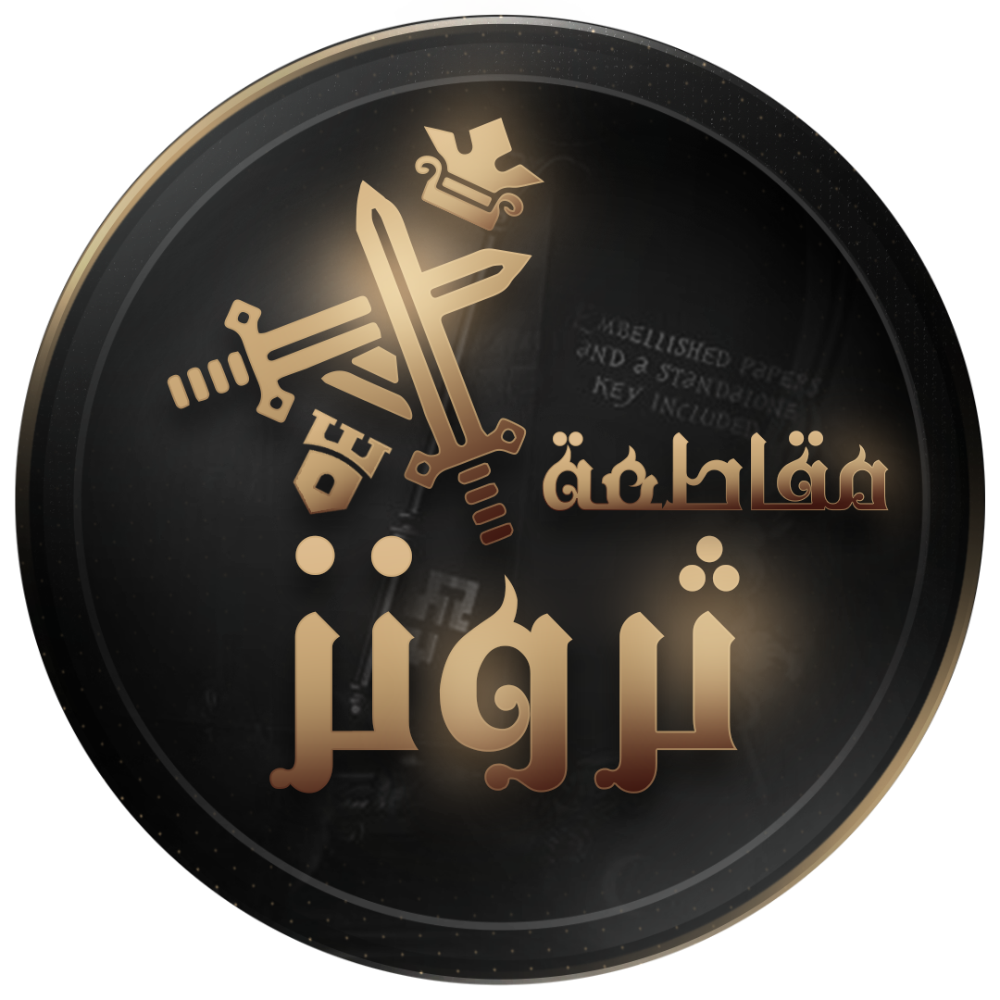

تسجيل الدخول
الأمن العام | مقاطعة ثرونز
البوابة الإلكترونية للشرطة العسكرية والقضاء العسكري
تسجيل عبر ديسكورديتم تسجيل الدخول عبر صفحة Discord الرسمية
الأمن العام | مقاطعة ثرونز
البوابة الإلكترونية للشرطة العسكرية والقضاء العسكري
تسجيل عبر ديسكورديتم تسجيل الدخول عبر صفحة Discord الرسمية